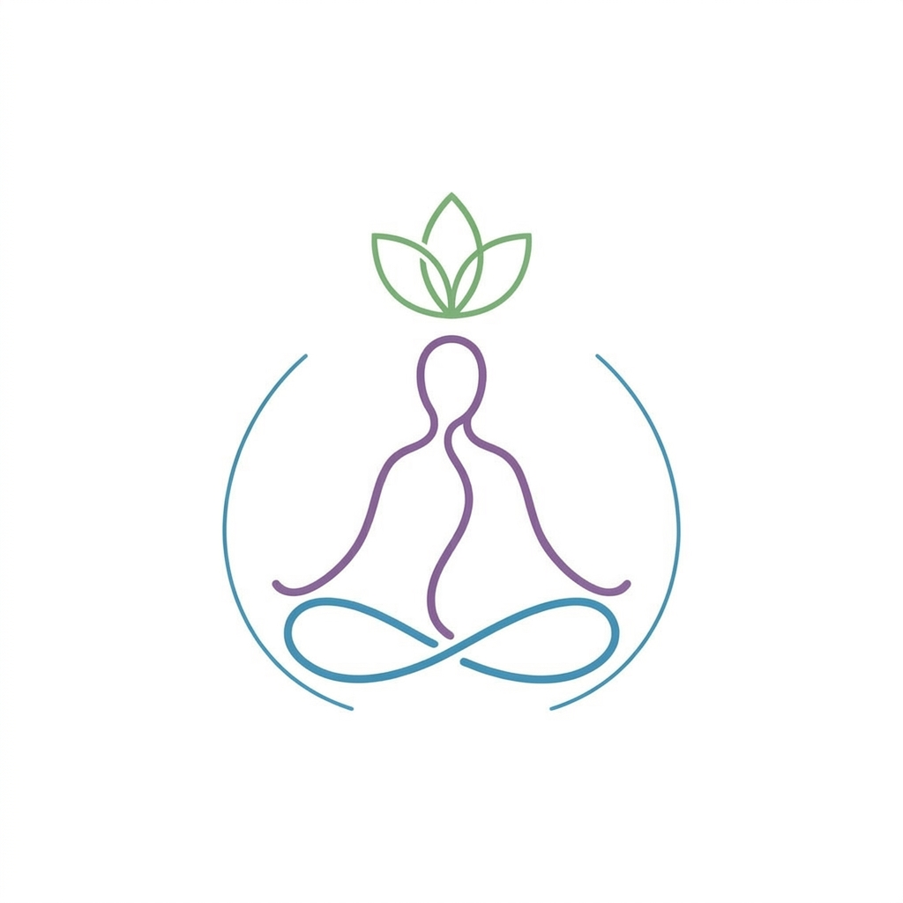
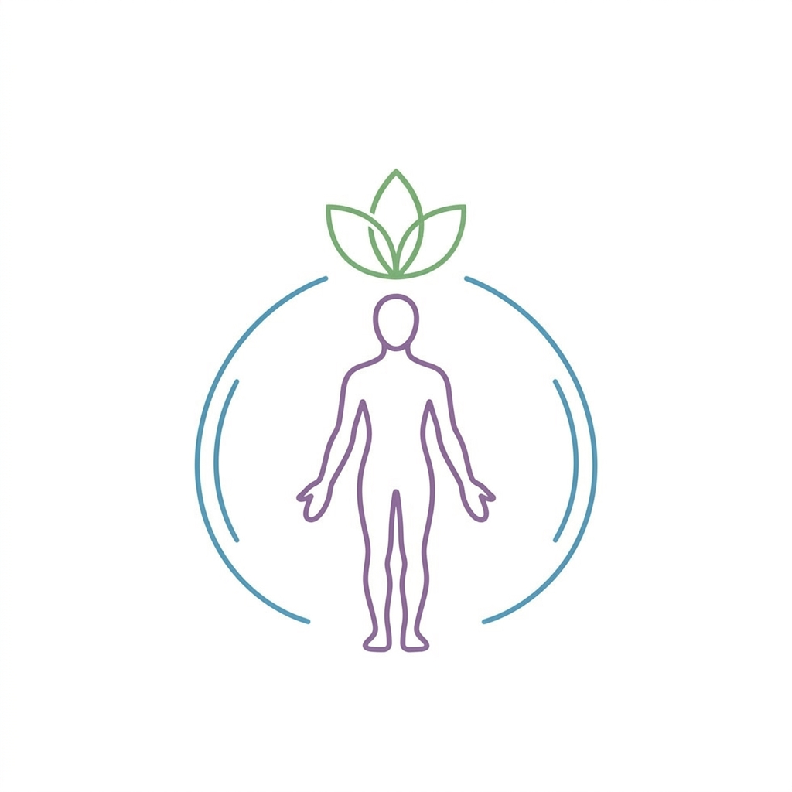
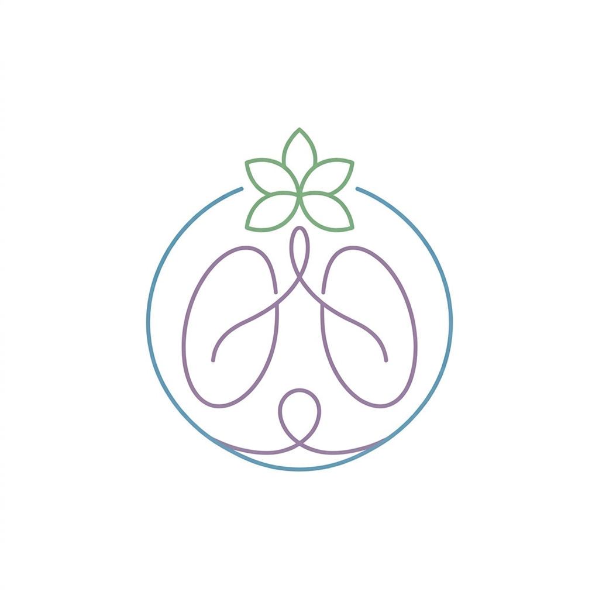
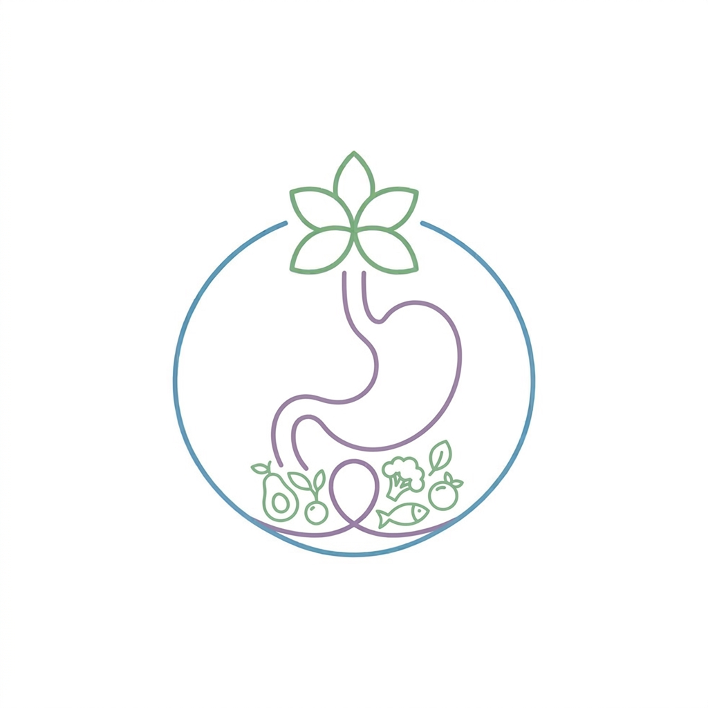

Herramientas Destacadas

Mindfulness
Técnica Mindfulness 5-4-3-2-1
✨ Anclaje sensorial guiado

Somático
Regulación Somática (SRS)
✨ Pelota interactiva y ciclos

Respiración
Respiración Cuadrada
✨ Control de ansiedad y calma

Nutrición
Recetario Funcional Salud Visual
✨ Cocina para la mente y visión
Todas las Aplicaciones
Mindfulness
Técnica Mindfulness 5-4-3-2-1
Ejercicio guiado de anclaje al presente con audios y sonidos naturales.
Somático
Regulación Somática (SRS)
Ciclos de respiración y presión con pelota somática interactiva.
Respiración
Respiración Cuadrada
Técnica de 4 tiempos para estabilizar el sistema nervioso y enfocar la mente.
Nutrición
Recetario Funcional
Alimentación funcional orientada a la salud visual, mental y cognitiva.